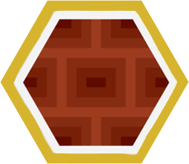

Catan Board Modeler

This is the future home of the Catan Board Modeler web app.
Bookmark this page to see how the software develops over time
-

If you would like to financially support the development process, thank you! You're awesome!
Please click the button below to be taken to my enamel pin shop where you can buy a pin or two to support me: